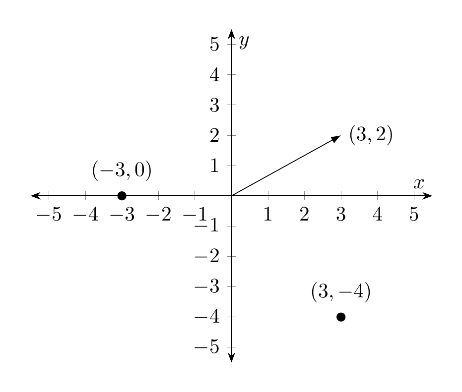
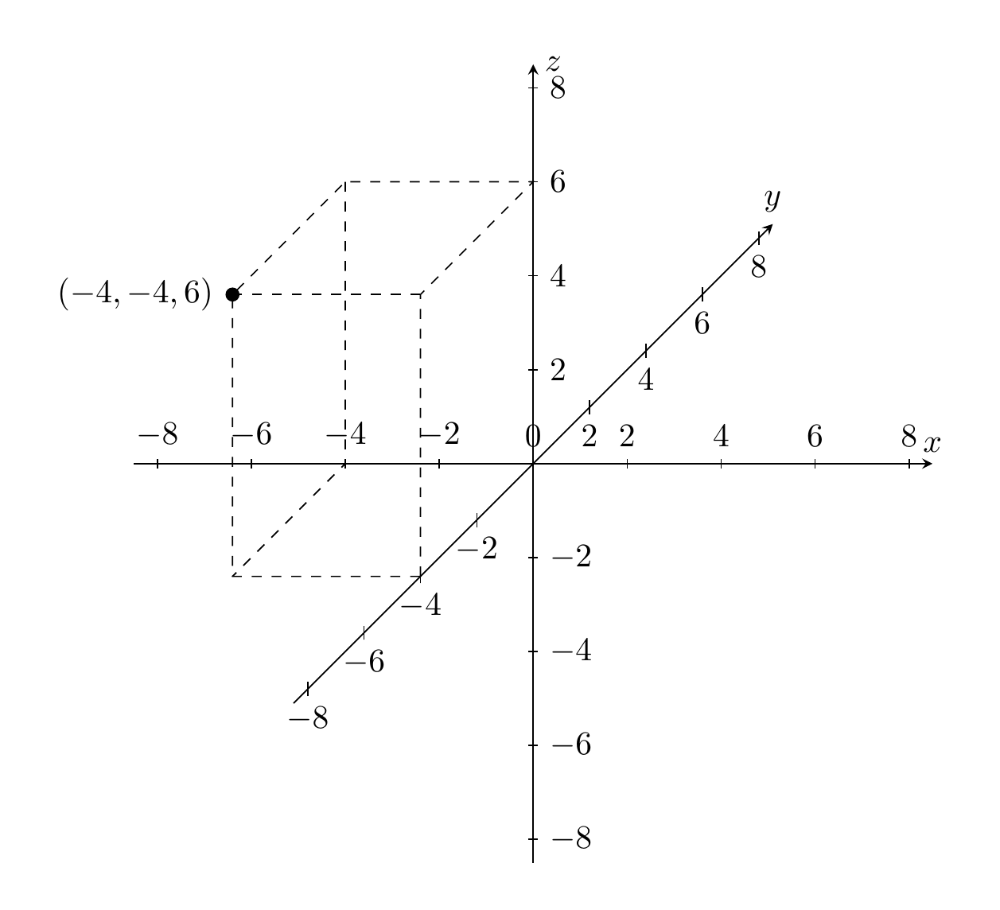
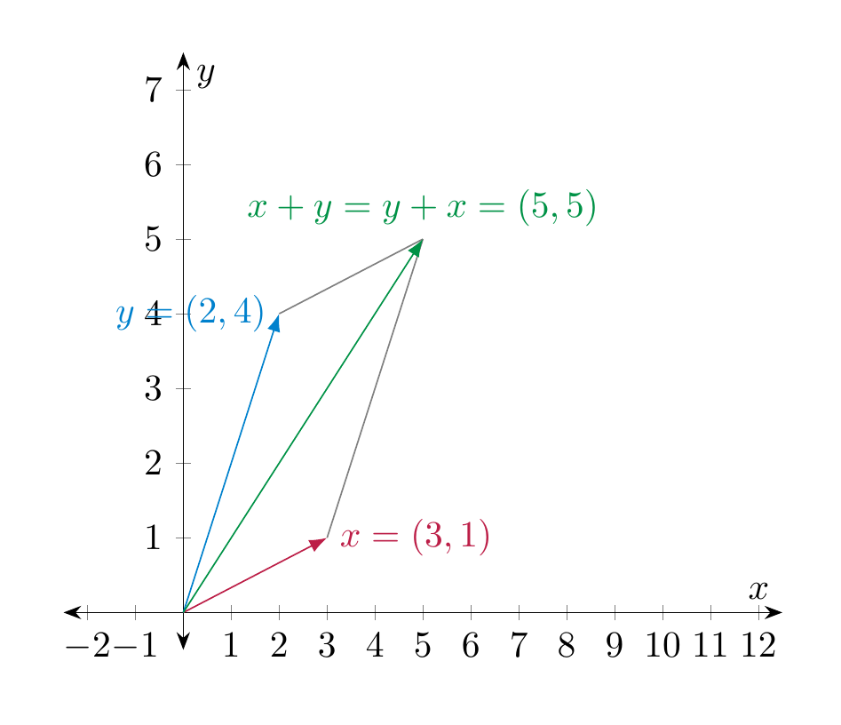
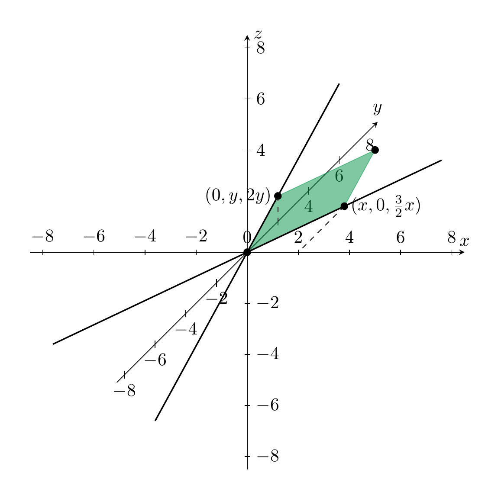
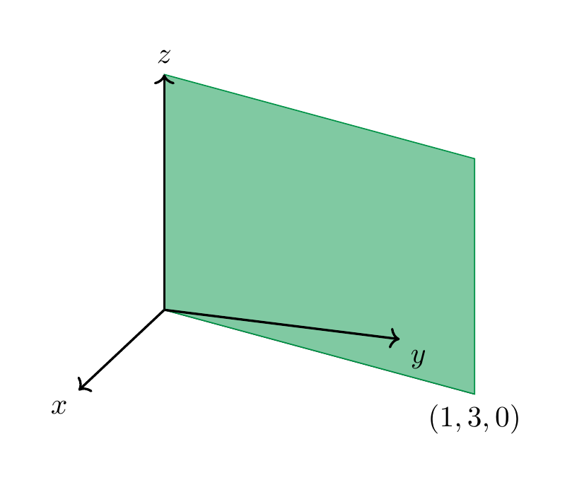
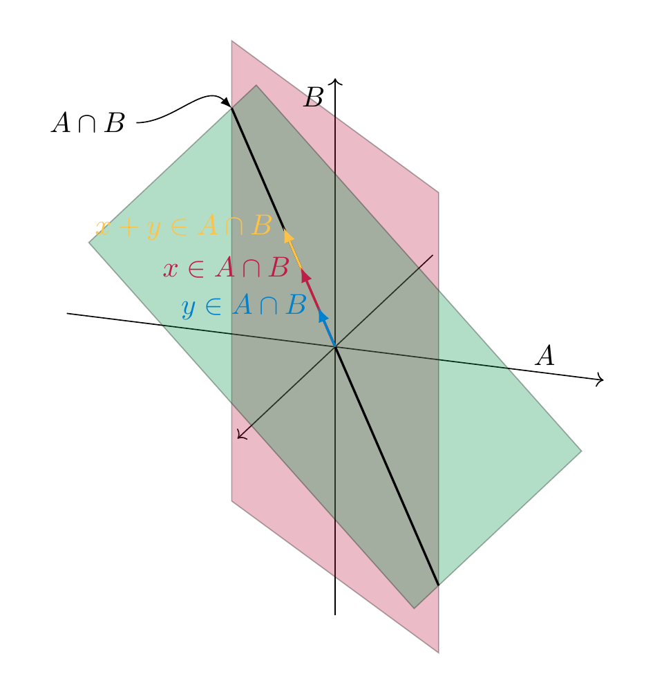
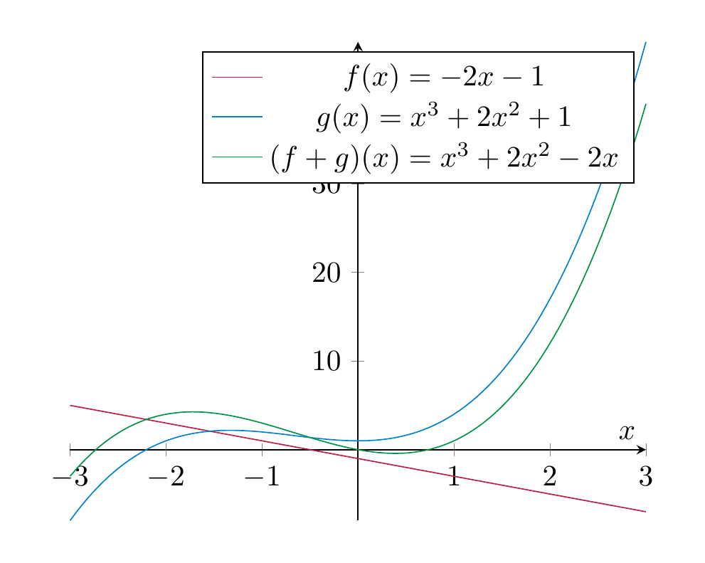
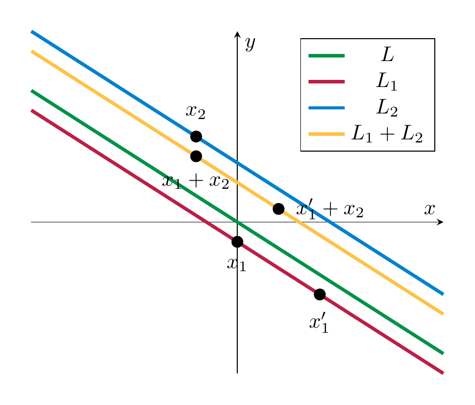

Vector spaces¶
\({\bf R}^2\), \({\bf R}^3\) and \({\bf R}^n\)¶
Definition 3.1
For \(n \ge 1\), an ordered \(n\)-tuple of real numbers is a collection of \(n\) real numbers in a fixed order. For \(n = 2\), an ordered 2-tuple is usually called an ordered pair, and an ordered 3-tuple is called an ordered triple. If these numbers are \(r_1, r_2, \dots, r_n\), then the ordered \(n\)-tuple consisting of these numbers is denoted
For example, \((2, 3)\) is an (ordered) pair. This pair is different from the (ordered) pair \((3, 2)\). It makes good sense to insist on the ordering, e.g., if a pair consists of the information
then \((3, 10)\) is of course different from \((10, 3)\). \((\frac 3 4, \sqrt 2, -7)\), \((0,0, 0)\) are examples of (ordered) 3-tuples. An ordered 1-tuple is simply a single real number.
Definition 3.2
For \(n \ge 1\), the set \({\bf R}^n\) is the set of all ordered \(n\)-tuples of real numbers. Thus (see §Chapter A for general mathematical notation)
Thus, \({\bf R}^1 = {\bf R}\) is just the set of real numbers. Next, \({\bf R}^2\) is the set of ordered pairs of real numbers:
Of course, here \(r_1, r_2\) are just symbols which have no meaning in themselves, so we can also write
The elements in \({\bf R}^n\) are also referred to as vectors. Thus, a vector is nothing but an ordered \(n\)-tuple. The element \((0, 0, \dots, 0) \in {\bf R}^n\) is called the zero vector. Instead of writing \((x_1, \dots, x_n)\) we also abbreviate this as \(x\), so that the expression
means that \(x\) is an (ordered) \(n\)-tuple consisting of \(n\) real numbers \(x_1, \dots, x_n\). The numbers \(x_1\) etc. are called the components of the vector \(x\).
Vectors in \({\bf R}\), \({\bf R}^2\) and \({\bf R}^3\) can be visualized nicely as points on the real line, as points in the plane or as points in 3-dimensional space. It is also common to decorate vectors with an arrow, with the idea of representing a movement or relocation to that point, or in physics a force with a certain strength in a certain direction.


This visualization also helps explain some of the fundamental features of \({\bf R}^n\).
Addition of vectors¶
Definition 3.3
Given two vectors (in the same \({\bf R}^n\), i.e., having the same number of components)
their sum is the vector
Example 3.4
What is the sum of \((1,1)\) and \((-2, 1)\)? Visualize that sum graphically!
Remark 3.5
The sum of two vectors is only defined if they belong to the same \({\bf R}^n\): a sum such as \((1,2) + (3, 4, 5)\) is undefined, i.e. is a meaningless expression.
The sum of vectors has the following crucial properties:
Lemma 3.6
For \(x = (x_1, \dots, x_n), y = (y_1, \dots, y_n)\) and \(z = (z_1, \dots, z_n) \in {\bf R}^n\) the following rules hold:
-
\(x + y = y + x\) (commutativity of addition)
-
\(x + 0 = x\) (adding the zero vector does not change the vector in question)
-
\(x + (y+z) = (x+y) + z\) (associativity of addition)
These identities are easy to prove since they quickly boil down to similar identities for the sum of real numbers. Here is a visual intuition for the commutativity of addition, which is also called the parallelogram law.

Scalar multiplication of vectors¶
Definition 3.7
Given a vector \(x = (x_1, \dots, x_n) \in {\bf R}^n\) and a real number \(r \in {\bf R}\), the scalar multiplication of \(x\) by \(r\) is the vector
I.e., every component of \(x\) gets multiplied by the number \(r\). Often one just writes \(rx\) instead of \(r \cdot x\).
Geometrically, the scalar multiplication corresponds to stretching the vector \(x\) by the factor \(r\) (i.e., if \(r > 1\) it is stretching, for \(0 < r < 1\) it compresses the vector, for \(r < 0\) it additionally flips the direction of the vector).
Example 3.8
What is \(4 \cdot (-1, 3)\)? What is \((- \frac 14) \cdot (-1,3)\)? Visualize the vector \((-1,3)\) and these results graphically!
Note that in contrast to the sum of vectors the scalar multiplication combines two different entities: a real number and a vector. The scalar multiplication has the following key properties:
Lemma 3.9
For two real numbers \(r, s \in {\bf R}\) and two vectors \(x, y \in {\bf R}^n\), the following identities hold:
-
\(r(x+y) = rx+ry\) (distributivity law)
-
\((r+s)x = rx + sy\) (distributivity law)
-
\((rs)x = r(sx)\) (scalar multiplication with a product \(rs\) of two real numbers can be computed by first multiplying with \(s\) and then with \(r\))
-
\(1 x = x\) (scalar multiplication by 1 does not change the vector)
-
\(0 x = 0\) (scalar multiplication by 0 gives the zero vector)
Again, these identities are easy to check using that the same rules hold if \(x, y\) were just real numbers.
Definition of vector spaces¶
Definition 3.10
A vector space is a set \(V\) that is equipped with two functions called the sum and the scalar multiplication:
satisfying the following conditions. Below \(r, s \in {\bf R}\) are arbitrary real numbers and \(u, v, w \in V\) arbitrary elements of \(V\) (also referred to as vectors):
-
\(v+ w= w+v\) (commutativity of addition),
-
\(u+(v+w) = (u+v)+w\),
-
there is a vector \(0 \in V\), called the zero vector, such that \(0 + v = v\) for all \(v \in V\),
-
\(r(v+w) = rv+rw\) (distributive law),
-
\((r+s)v = rv+sv\),
-
\((rs)v = r(sv)\),
-
\(1 v = v\),
-
\(0 v = 0\) (at the left 0 denotes the real number zero, at the right it denotes the zero vector)
Example 3.11
The sets \({\bf R} = {\bf R}^1\), \({\bf R}^2\), and in general \({\bf R}^n\) are vector spaces (where the function \(+\) is given by vector addition and \(\cdot\) is scalar multiplication). Indeed, the conditions in Definition 3.10 are precisely the properties of vector addition and scalar multiplication noted before in Lemma 3.6 and Lemma 3.9.
Remark 3.12
Recall from §Chapter A that the notation appearing in
means that \(+\) is a function that takes as an input two elements in \(V\), which here are denoted \(v\) and \(w\), and produces as an output another element in \(V\). That element is denoted \(v + w\). Likewise
means that \(\cdot\) is a function whose input is a pair consisting of a real number, here denoted \(r\), and an element in \(V\), and produces as an output an element in \(V\) that is denoted \(rv\) or \(r \cdot v\).
Some authors distinguish notationally between vectors and numbers by writing \(\vec v\) for vectors and \(r\) for numbers. In these notes, we usually do not use that convention.
Example 3.13
The following subsets of \({\bf R}^n\) are not vector spaces. In each case, draw the set and point out precisely which of the above condition(s) fails.
-
\(\{(x_1, x_2) \in {\bf R}^2 \text{ with }x_1 \ge 0\}\),
-
\(\{(x_1, x_2) \in {\bf R}^2 \text{ with }x_1 \ne 0\}\),
-
The solution set of the equation
- \(\{(x_1, x_2) \in {\bf R}^2 \text { with }x_1 = 0 \text{ or } x_2 = 0 \}\).
Solution sets of homogeneous linear systems¶
Recall from Definition 2.13 that a homogeneous linear system is one on which the constant terms are all zero, i.e., one of the form
(3.14)
In this section, we will see that the solution sets to homogeneous linear systems are vector spaces, which is an extremely important class of examples. We begin by looking at homogeneous linear equations, i.e., a linear system consisting of a single (homogeneous) equation.
Example 3.15
The homogeneous linear equation
has the solution set
Indeed, a triple \((x,y,z)\) is a solution to the equation above precisely if \(z = \frac{3x+4y}2\), and \(x\) and \(y\) can be arbitrary real numbers. A few concrete elements in this solution set, drawn below, are the points \((0,0,0)\), \((2,0,3)\), \((0,1,2)\). Slightly more generally, triples of the form \((0, y, 2y)\) and \((x, 0, \frac 32 x)\), for arbitrary \(y\), resp. \(x\), are elements in the solution set. These lines (which lie in the \(y-z\)-plane, resp. in the \(x-y\)-plane) are also drawn below. Of course, the solution set contains further elements such as the point \((2,1,5)\). The green shape is meant to illustrate further elements of the solution set, but of course this is not bounded by the lines in the illustration, instead it stretches out in all directions.

Example 3.16
What equation (in the three variables \(x\), \(y\) and \(z\)) has the following solution set? Again the picture only shows the solution set partly, it is meant to be extended to the left and below.

We note that both equations have a solution set which is a plane passing through the origin, i.e., the point \((0,0,0)\). We will want to articulate that this plane is a vector space that lies inside the larger ambient vector space \({\bf R}^3\).
Definition 3.17
A subspace (or sub-vector space, or vector subspace) \(V\) of \({\bf R}^n\) is a subset that is – in its own right – a vector space. I.e.,
-
it contains the zero vector,
-
for all vectors \(v, w \in V\), the sum \(v+w\) is an element of \(V\), and
-
for all \(v \in V\) and all real numbers \(r \in {\bf R}\), the scalar multiple \(r \cdot v\) is required to be an element of \(V\).
More generally, a subset \(V\) of another vector space \(W\) is a subspace if \(V\) satisfies the three preceeding conditions.
We have seen in Example 3.13 a number of subsets of \({\bf R}^2\) that fail to be subspaces. In particular, the solution set of the equation \(3x_1 + 2x_2 = 3\) is not a vector space since the zero vector \((0,0)\) is not a solution of this equation. This is not a homogeneous equation (the constant term is 3, but not 0). The next proposition tells us that this is the cause of the failure:
Proposition 3.18
Consider a homogeneous linear system in \(n\) variables \(x_1, \dots, x_n\), and \(m\) equations, as in Equation (3.14). Its solution set is a subspace of \({\bf R}^n\).
Proof. Let us call \(S\) the solution set of the system. I.e., an element \(x = (x_1, \dots, x_n)\) belongs to \(S\) precisely if it is a solution of the linear system Equation (3.14).
We check the three conditions in Definition 3.17:
-
\((0, \dots, 0) \in S\), i.e. the zero vector in \({\bf R}^n\) is a solution. Indeed, plugging in zero in all the \(x_i\) gives \(0 = 0\) for all the \(m\) equations, which holds.
-
Let \(v = (v_1, \dots, v_n)\) and \(w = (w_1, \dots, w_n)\) be elements of \(S\). We need to check that \(v + w\) is also in \(S\). Recall from Definition 3.3 that \(v + w = (v_1 + w_1, \dots, v_n + w_n)\). The \(m\) equations of the linear system read
where \(i = 1, \dots, m\). Inserting \(v_1 + w_1\) for \(x_1\) etc., we get
This shows that \(v + w \in S\).
- In a similar manner, one shows (do it!) that for any \(r \in {\bf R}\) and \(v = (v_1, \dots, v_n) \in S\) the scalar multiple \(rv = (r v_1, \dots, rv_n)\) is again in \(S\).
◻
Intersection of subspaces¶
Lemma 3.19
Let \(V\) be a vector space and \(A, B \subset V\) be two subspaces. Then the intersection
is also a subspace of \(V\). More generally, this holds true for any number of subspaces, i.e., if \(A_1, A_2 \dots, A_n \subset V\) are subspaces, then so is their joint intersection
Proof. We need to make sure that \(A \cap B\) satisfies the conditions in Definition 3.17. This is easy enough. For example, the zero vector \(0 \in A \cap B\) since \(0 \in A\) (since \(A\) is a subspace) and also \(0 \in B\) (since \(B\) is also a subspace). Here is a visualization for sums: if \(x, y \in A \cap B\), then \(x + y \in A \cap B\) since it is both contained in \(A\) and also in \(B\).

◻
Intersections of subspaces are hugely important to us because of the following example.
Example 3.20
Consider once again a homogenous system as in Equation (3.14). Then, of course, each individual equation of that system is in its own right a homogeneous linear equation, for example
By the above, the solution set of that equation is a subspace of \({\bf R}^n\), that we denote by \(S_1 (\subset {\bf R}^n)\). Likewise this is true for all the other individual equations, so we get some subspaces \(S_1, \dots, S_m\), one for each equation. The solution set of the whole system is then just
(Indeed, a vector \((r_1, \dots, r_n) \in {\bf R}^n\) is a solution for the whole system precisely if it is one for the individual equations.)
An important question that we will eventually be able to make more precise and to answer is this:
Question 3.21
Given two subspaces \(A, B\) in some vector space \(V\), how “much smaller” can \(A \cap B\) be than \(A\) and \(B\)?
In the above illustration, we will want to articulate the idea that the ambient vector space \(V\) is “3-dimensional”, \(A\) and \(B\) are 2-dimensional (i.e., a plane) and \(A \cap B\) is 1-dimensional (i.e., a line). Note that this need not be the case: if \(A = B\) is the same plane, for example, then certainly \(A \cap B = A\) is also 2-dimensional. This relates to the discussion about the intersections of lines in \({\bf R}^2\) in Summary 2.12: if \(A, B \subset {\bf R}^2\) are “1-dimensional” (i.e., lines), their intersection may still be a line, namely if \(A = B\). If the ambient vector space \(V\) is even larger, for example \(V = {\bf R}^4\) (which has “dimension 4”), then it is no longer reasonable to write down all possible constellations of how \(A, B\) lie in \(V\).
Further examples of vector spaces¶
Polynomials¶
We introduce a number of further examples of vector spaces. Recall that a function \(f : {\bf R} \to {\bf R}\) (i.e., cf. §Chapter A, a function that takes as an input a real number \(x\) and whose output \(f(x)\) is another real number) is called a polynomial if it is of the form
where \(a_n, a_{n-1}, \dots, a_0\) are real numbers. These numbers are called the coefficients of \(f\). The degree of \(f\) is the largest exponent \(n\) appearing in \(f\) (provided that the coefficient \(a_n \ne 0\)). Recall from §Chapter A that such an expression is abbreviated as
In increasing complexity, a constant function
is a polynomial of degree 0 (note \(a = a \cdot x^0\));
is a linear polynomial (also known as linear function). Its degree is 1 (provided \(a_1 \ne 0\)). Next,
is called a quadratic polynomial (or quadratic function). Its degree is 2 (provided \(a_2 \ne 0\); if \(a_2 = 0\) then it is a linear polynomial). These types of functions are familiar from high-school.

Definition and Lemma 3.22
The set
is a vector space, where we define the sum and scalar multiplication as follows: given two polynomials \(f, g \in P\), their sum is the function \(f + g : {\bf R} \to {\bf R}\)defined by
(3.23)
and given a real number \(r \in {\bf R}\), the scalar multiple is the function \(r f : {\bf R} \to {\bf R}\) defined by
(3.24)
The set
of polynomials of degree at most \(d\) is a subspace of \({\bf R}[x]\).
Proof. We have to check the conditions on a vector space (Definition 3.10). As it also happens often in other examples, the most notable condition to check is that the sum and scalar multiple is again an element of the vector space. Here, we need to check that for \(f, g \in P\) the function \(f + g\) defined above is again a polynomial. Fortunately, this is easy: if \(f(x) = a_n x^n + a_{n-1} x^{n-1} + \dots + a_1 x + a_0\) and \(g(x) = b_n x^n + b_{n-1} x^{n-1} + \dots + b_0\), then, by definition
Thus, the sum of \(f\) and \(g\) is another polynomial. Similarly, one verifies that the scalar multiple \(r \cdot f\) is a polynomial (check this! what are its coefficients?). With these checks done, one can proceed checking the remaining conditions in Definition 3.10. Checking this is comparatively uninsightful, and will be skipped.
Checking that \({\bf R}[x]^{\le d}\) is a subspace amounts to asserting that the 0 polynomial \(f(x) = 0\) has degree at most \(d\), and that sums and scalar (!) multiples of polynomials of degree \(\le d\) have again degree \(\le d\). This is clear. ◻
Remark 3.25
It is also true that the product of two polynomials is again a polynomial, but this is not part of what it takes to be a vector space, so we disregard that property at this point.
Remark 3.26
Instead of just polynomials, one can consider more general functions:
are increasingly large vector spaces, cf. Exercise 3.3. The (huge!) space of all differentiable functions is a key player in analysis.
Direct sums¶
Definition and Lemma 3.27
Let \(V, W\) be two vector spaces. Their direct sum is the set
It is endowed with the addition given by
and scalar multiplication given by
These operations turn \(V \oplus W\) into a vector space.
More generally, the same definition works for finitely many[^1] vector spaces \(V_1, \dots, V_n\), giving rise to the direct sum \(V_1 \oplus \dots \oplus V_n\).
This is easy to check: revisit the definition of a vector space and see how checking each of the 8 axioms for \(V \oplus W\) reduces to using the precise same axioms for \(V\) and \(W\). In particular, the zero vector in \(V \oplus W\) is the pair \((0_V, 0_W)\), where for clarity \(0_V\) denotes the zero vector in \(V\) and \(0_W\) the one in \(W\).
Example 3.28
We have \({\bf R}^2 = {\bf R} \oplus {\bf R}\) and in general
This is clear from the definition of the sum of vectors in \({\bf R}^n\) (Definition 3.3) and the scalar multiplication (Definition 3.7).
Note that \(V \subset V \oplus W\), by regarding a vector \(v \in V\) as the vector \((v, 0_W)\). Likewise we can regard some \(w \in W\) as the vector \((0_V, w) \in V \oplus W\). This way, \(V \oplus W\) is a vector space that naturally contains both \(V\) and \(W\).
Example 3.29
The direct sum \({\bf R}^2 \oplus {\bf R}\) consists of pairs \((v, w)\) with \(v = (x, y) \in {\bf R}^2\) and \(w \in {\bf R}\). Thus, \({\bf R}^2 \oplus {\bf R} = \{((x,y), w) \ | \ x, y, w \in {\bf R}\}\). We can identify such a pair (consisting of a pair \((x,y)\) and a number \(w\)) with a triple \((x,y,w)\). Therefore, \({\bf R}^2 \oplus {\bf R}\) can be identified with \({\bf R}^3\). The sum and scalar multiple on \({\bf R}^2 \oplus {\bf R}\) as defined in Definition and Lemma 3.27 then reduce to the usual sum and scalar multiple in \({\bf R}^3\) as defined in Definition 3.3 and Definition 3.7.
Quotient spaces¶
All the examples of vector spaces that we have encountered so far were subspaces of an already given vector space, beginning with some ambient \({\bf R}^n\). However, not all vector spaces embed (naturally) in some \({\bf R}^n\). To illustrate this, we consider an example of a so-called quotient space. Since a full treatment of this would require a few more basic notions, we only discuss this in a special case:
Definition 3.30
Consider \(V = {\bf R}^2\), the plane, and a line \(L \subset W\) through the origin. We define a set
(This is read “\(V\) modulo \(L\).”) For example, \(L_1\) and \(L_2\) are elements in that set \(V / L\) in the illustration below.

How to define the sum and scalar multiplication on that set \(V/L\)? Given \(L_1, L_2 \in V/L\), take any \(x_1 \in L_1\) and any \(x_2 \in L_2\). (These are both vectors in \(V = {\bf R}^2\).) Form the unique line that passes through \(x_1 + x_2\) and is parallel to \(L\). Call this line \(L_1 + L_2\). Similarly, the scalar multiple \(r \dot L_1\) is the line passing through \(r \cdot x_1\) and parallel to \(L\). What is remarkable is that makes sense, i.e., that the resulting lines do not depent on the choices of \(x_1, x_2\) above. In the illustration below, we indicate two choices for \(x_1\) (the second one being denoted \(x_1'\)). The sum \(x_1 + x_2\) is clearly different from \(x'_1 + x_2\), but they do lie on the same line (that is parallel to \(L\)). This holds since \(x'_1 - x_1\) lies in \(L\). Thus
also lies in \(L\), and therefore \(x'_1 + x_2\) and \(x_1 + x_2\) lie on the same line that is parallel to \(L\).
With this settled, one can show (withouth much head-ache) that \(V/L\) is indeed a vector space. (What is the zero vector in \(V/L\)?)
A conceptually important insight is that there is no natural way in which this \(V/L\) is a subspace of \({\bf R}^2\). E.g., one may assign to an element \(L_1 \in V/L\), say, the \(y\)-coordinate of the intersection of \(L_1\) with the \(y\)-axis. But, this idea is ad-hoc and problem-laden (why not take the \(x\)-axis instead, and what is worse, what happens if \(L\) is in fact the \(y\)-axis...).
Linear combinations¶
In the sequel, \(V\) will always denote a vector space, for example \(V = {\bf R}^n\).
Definition 3.31
A linear combination of vectors \(v_1, \dots, v_m \in V\) is a vector of the form
where the \(a_1, \dots, a_m\) are arbitrary real numbers.
Example 3.32
If \(m = 1\) in the above definition, there is only one vector \(v := v_1\). A linear combination of a single vector \(v\) is therefore any vector of the form \(a v\), with an arbitrary \(a \in {\bf R}\). In other words it is an arbitrary scalar multiple of that vector.
Example 3.33
More interesting things start happening for two vectors and more. As an example, consider \(v_1 = (1, 0, 0)\) and \(v_2 = (0, 1, 0)\) in the vector space \({\bf R}^3\). Then \((3, 2, 0)\) is a linear combination of these since
On the other hand, \((0, 0, 1)\) is not a linear combination of \(v_1\) and \(v_2\): for arbitrary \(a_1, a_2 \in {\bf R}\), we compute
No matter how we choose \(a_1\) and \(a_2\), we always have
since the third components of these two vectors are always different. In fact, the linear combinations of \(v_1\) and \(v_2\) are precisely the vectors \((x, y, z)\) that satisfy \(z = 0\).

Given two vectors \(v_1, v_2 \in {\bf R}^3\), we will see later (Theorem 3.71) that there will always be some vector \(w \in {\bf R}^3\) (in fact infinitely many) that is not a linear combination of \(v_1\) and \(v_2\). In the above example any vector \(w = (x,y,z)\) with \(z \ne 0\) has that property. Continuing with that example, the \(x-y\)-plane inside \({\bf R}^3\), i.e., \(V := \{(x,y,z) \ | \ x, y \in {\bf R}, z = 0\} = \{(x,y,0) \ | \ x, y \in {\bf R} \}\) is a subspace of \({\bf R}^3\): it contains \((0,0,0)\) and given any two vectors \(v, w \in V\) we have \(v+w \in V\) and given \(r \in {\bf R}\), \(r v \in V\) (convince yourself this is true!). We can alternatively use Proposition 3.18 to see this is a subspace: \(V\) is the solution space of the equation \(z = 0\) (in the three variables \(x, y, z\)), which is a homogeneous linear equation. The following statement asserts that we always obtain a subspace in this manner.
Lemma 3.34
Let \(V\) be a vector space and \(v_1, \dots, v_m \in V\) be any vectors. The set
of all linear combinations of \(v_1, \dots, v_m\) is a subspace of \(V\). It is called the span (or sometimes also the linear hull) of these vectors.
Proof. We check the three conditions in Definition 3.17. Let us abbreviate \(L := L(v_1, \dots, v_m)\).
-
The zero vector \(0 \in L\) since \(0 \cdot v_1 + \dots 0 \cdot v_m = 0 \cdot (v_1 + \dots + v_m) = 0\), using properties 4. and 8. in the definitions of a vector space.
-
Given two vectors \(w, u \in L\), we check \(w+u \in L\). Since \(w \in L\) there are some real numbers \(a_1, \dots, a_m\) such that \(w = a_1 v_1 + \dots + a_m v_m = \sum_{i=1}^m a_i v_i\). Likewise there are real numbers \(b_1, \dots, b_m\) with \(u = \sum_{i=1}^m b_i v_i\). This implies
- Given \(w \in L\) and \(r \in {\bf R}\), one checks similarly that \(rw \in L\) (, verify that!).
◻
Example 3.35
In Example 3.33, we have
Exercise 3.10 and Exercise 3.11 discuss linear combinations in the vector space \({\bf R}[x]^{\le 3}\). The span is closely related to another construction that produces new vector spaces out of given ones:
Definition 3.36
Let \(V\) be a vector space and \(A, B \subset V\) be two subspaces. The sum of \(A\) and \(B\) is defined as
I.e., it consists of all possible ways to sum an element in \(A\) and an element in \(B\). More generally, given subspaces \(A_1, \dots, A_n\) of \(V\), their sum is defined as
Lemma 3.37
The sum \(A+B\) is then again a subspace of \(V\).
The proof of this is very similar to the one of Lemma 3.34 and will be omitted.
Remark 3.38
Given some vectors \(v_1, \dots, v_n \in V\), we have
Indeed, both sets are precisely the vectors of the form \(a_1 v_1 + \dots + a_n v_n\) for arbitrary \(a_i \in {\bf R}\).
Remark 3.39
The sum is completely different from the union \(A \cup B\) of the two subspaces. We have seen in Example 3.13 that the union is (in general) not even a subspace (just a subset). We have
but these two subsets are distinct (unless \(A\) or \(B\) only consists of the zero vector). To see this inclusion, note that \(A \subset A + B\). Indeed, the zero vector \(0 \in B\) (since it is a subspace!), and for any \(v \in A\), we have \(v = v + 0 \in A + B\). Similarly, \(B \subset A + B\), and therefore \(A \cup B \subset A + B\).
Remark 3.40
The sum \(A+B\) is different from the direct sum \(A \oplus B\). This is already clear from the definition: while the sum makes use of the ambient vector space \(V\), the direct sum \(A \oplus B\) is insensitive to \(A\) and \(B\) both lying in \(V\). Also, it does not “see” to what extent \(A\) and \(B\) may overlap.
In a spirit similar to Question 3.21 we can ask the following question:
Question 3.41
Given two subspaces \(A, B \subset V\) of some larger vector space, how much “bigger” than \(A\) and \(B\) is the sum \(A + B\)?
It turns out that Question 3.21 are closely related. Loosely speaking, one can say that \(A + B\) “gets bigger” the same way as \(A \cap B\) “gets smaller”. To give a precise meaning to this one needs the concept of the dimension of a vector space. Understanding the dimension of a vector space requires combining two preliminary notions, that of a generating system and that of linear independence below (Definition 3.49).
Definition 3.42
A collection \(v_1, \dots, v_n\) of vectors is a generating system if
or, equivalently, if every vector \(w \in V\) is an appropriate linear combination of these vectors. We also say that these vectors span \(V\) if this is the case.
Example 3.43
The vectors \(e_1 := (1, 0, \dots, 0)\), \(e_2 = (0, 1, 0, \dots, 0)\) up to \(e_n = (0, \dots, 0, 1)\) are a generating system. Indeed, each vector \(x = (x_1, \dots, x_n) \in {\bf R}^n\) is a linear combination of these, namely
Example 3.44
We have observed in Example 3.33 that the vectors \(e_1 = (1, 0, 0)\) and \(e_2 = (0, 1, 0)\) in \({\bf R}^3\) are not a generating system since they only span the subspace
which is not the entire \({\bf R}^3\) (e.g., \((0,0,1)\) is missing).
The following example shows that three arbitrary vectors in \({\bf R}^3\) need not form a generating set.
Example 3.45
Consider the vectors \(v_1 := e_1 = (1, 0, 0)\), \(v_2 = (0, 1, 1)\) and \(v_3 = (2, 1, 1)\). These three vectors do not form a generating set of \({\bf R}^3\). In order to show this and to also understand which vectors are precisely in the span \(L(v_1, v_2, v_3)\), we consider the following equation, where \(w = (x, y, z) \in {\bf R}^3\) is a vector and \(a_1, a_2, a_3 \in {\bf R}\):
Those vectors \(w\) that can be written in such a form are in the span, those where no such equation holds are not in the span! This is an equation between two vectors in \({\bf R}^3\), i.e., ordered triples. Two such triples are the same precisely if their three components are the same. This leads to the following linear system:
In this system \(a_1, a_2, a_3\) are the variables, and \(x, y, z\) are parameters (on which the solutions of the system will depend). We form the matrix associated to this linear system, which is
We apply Gaussian elimination to that matrix, i.e., subtract the second row from the third:
We now distinguish two cases:
- \(z-y = 0\) (i.e., \(y=z\)): in this case the matrix is already in reduced row echelon form (Definition 2.27). The system has solutions, namely the variable \(a_3\) is a free variable, so its value be chosen arbitrarily. Then \(a_1\) and \(a_2\) are uniquely determined by \(a_3\) by the equations
which gives \(a_1 = x - 2a_3\) and \(a_2 = y - a_3\). Therefore, for arbitrary \(x, y \in {\bf R}\), the vectors
are in the span. They can be expressed as linear combinations
for an arbitrary \(a \in {\bf R}\) (this was the \(a_3\) before).
- \(z - y \ne 0\) (i.e., \(y \ne z\)). In this case, we can divide the last equation by \(z-y\), which gives the following reduced row-echelon matrix
According to Method 2.31, the system has no solution in this case. Thus, vectors of the form
are not in the span: \(w \notin L(v_1, v_2, v_3)\).
The following method gives a criterion to check whether a given set of vectors generates \({\bf R}^n\). We will prove this statement later (Theorem 4.81).
Method 3.46
Let \(v_1, \dots, v_m \in {\bf R}^n\) be some vectors. Form the matrix
(i.e., each the \(i\)-th row of \(A\) is precisely the vector \(v_i\), so that \(A = (v_{ij})\) if \(v_i = (v_{i1}, \dots, v_{in})\).) Bring this matrix into row-echelon form by Gaussian elimination (Method 2.29). Call this resulting matrix \(B\). If \(B\) contains \(n\) leading ones, then \(v_1, \dots, v_m\) span \({\bf R}^n\). Otherwise, they don’t span \({\bf R}^n\).
Corollary 3.47
Fewer than \(n\) vectors can never span \({\bf R}^n\) (since in any event \(B\) can at most contain \(m\) leading ones).
Linear independence¶
Let \(v_1, \dots, v_m \in V\) be \(m\) vectors in some vector space. Then we have
(3.48)
This follows from the distributive law and the scalar multiplication of any vector with 0, cf. 4. and 8. in Definition 3.10. So, there is always a “trivial” way to obtain the zero vector from \(v_1, \dots, v_m\). We can ask if there are other ways of achieving the zero vector.
Definition 3.49
We say \(v_1, \dots, v_m\) are linearly dependent if there is a non-zero linear combination of these that gives the zero vector. I.e., if there are \(a_1, \dots, a_m \in {\bf R}\) of which at least one is non-zero, such that
(3.50)
If this is not the case, then we say the vectors are linearly independent.
Thus, they are linearly independent if the zero linear combination in Equation (3.48) is the only way to obtain the zero vector as a linear combination of \(v_1, \dots, v_m\).
Example 3.51
The vectors \(e_1 = (1, 0, 0)\), \(e_2 = (0,1,0)\) and \(e_3=(0,0,1) \in {\bf R}^3\) are linearly independent. To see this, suppose some linear combination equals the zero vector: if
then we compute the left hand side as
so the above equation forces \(a_1 = a_2 = a_3 = 0\). This shows that the vectors are linearly independent.
More generally, the same argument shows that
are linearly independent.
Example 3.52
We revisit the vectors \(v_1 := e_1 = (1, 0, 0)\), \(v_2 = (0, 1, 1)\) and \(v_3 = (2, 1, 1) \in {\bf R}^3\) of Example 3.45. These vectors are not linearly independent. Indeed, we observe that \(v_3 = 2 v_1 + v_2\), so that
Example 3.53
The polynomials \(1 + x\), \(3x+x^2\), \(2+x-x^2\) are linearly independent vectors in \({\bf R}[x]^{\le 2}\). To see this, suppose that a linear combination of them equals the zero vector (i.e., the constant polynomial 0):
Since this must hold for all \(x \in {\bf R}\), this forces the following homogeneous linear system:
Solving this system (do it ) one sees that this only has the trivial solution \(a_1 = a_2 = a_3 = 0\). Thus, the polynomials are linearly independent.
The following statement says in some sense that a family of vectors is linearly independent if there is no redundancy among them.
Lemma 3.54
Let \(v_1, \dots, v_m \in V\) be some vectors. They are linearly dependent exactly if (at least) one of these vectors can be expressed as a linear combination of the others, i.e., some
(3.55)
for an appropriate \(i\) and appropriate coefficients \(a_1\) etc.
Proof. If holds, then
so they are linearly dependent.
Conversely, if holds, then pick some \(i\) such that \(a_i \ne 0\) (by assumption this is possible). Then one can subtract \(a_i v_i\) and divide by \(- a_i\) (which is nonzero, crucially!), giving
This is an equation of the form . ◻
The following method decides whether a given set of vectors is linearly independent in \({\bf R}^n\). A proof is conveniently done using later results, such as Lemma 4.77.
Method 3.56
Let \(v_1, \dots, v_m \in {\bf R}^n\) be some vectors. Form the matrix
(i.e., each the \(i\)-th row of \(A\) is precisely the vector \(v_i\), so that \(A = (v_{ij})\) if \(v_i = (v_{i1}, \dots, v_{in})\).) Bring this matrix into row-echelon form using Gaussian elimination (Method 2.29). Call this resulting matrix \(B\). If \(B\) contains \(m\) leading ones, then \(v_1, \dots, v_m\) are linearly independent. Otherwise, they are linearly dependent.
Corollary 3.57
More than \(n\) vectors can never be linearly independent in \({\bf R}^n\) (i.e., for \(m > n\), any vectors \(v_1, \dots, v_m\) will be linearly dependent, since the matrix \(B\) can contain at most \(n\) leading ones, being in reduced row-echelon form).
Remark 3.58
This method is very similar to Method 3.46, except that there we asked \(B\) to contain \(n\) leading ones: this guarantees that \(v_1, \dots, v_m\) span \({\bf R}^n\). Having as many leading ones as there are vectors, i.e., \(m\) leading ones, instead guarantees that the vectors are linearly independent.
Example 3.59
We revisit the vectors \(v_1 := e_1 = (1, 0, 0)\), \(v_2 = (0, 1, 1)\) and \(v_3 = (2, 1, 1) \in {\bf R}^3\) of Example 3.59. The matrix having these vectors as rows is
We bring it into reduced row echelon form like so:
This reduced row-echelon matrix has only 2 leading ones, so the vectors are not linearly independent, i.e., they are linearly dependent.
The importance of linearly independent vectors comes from the following result:
Proposition 3.60
Let \(v_1, \dots, v_m\) be linearly independent vectors in a vector space \(V\). If some vector \(v\) can be expressed as an (ostensibly different) linear combination of those, these presentations must be the same. I.e., if
for appropriate real numbers \(a_1, \dots, a_m, b_1, \dots, b_m\), then necessarily we have
Proof. Subtracting these two equations from one another (and using the commutativity of addition, and the law of distributivity, cf. Definition 3.10), we obtain
Since the vectors are linearly independent, this implies \(a_1 - b_1 = 0\) etc., so that \(a_1 = b_1\) etc. ◻
The dimension of a vector space¶
We are all used to referring to the space surrounding us as “3-dimensional”, and refer to a plane as “2-dimensional”. In this section, which is crucial to linear algebra and, by extension to all applications of linear algebra in physics, engineering and mathematics itself, we make this statement precise.
Theorem 3.65
Let \(V\) be a vector space with a basis \(v_1, \dots, v_n\). Then any other basis of \(V\) also consists of \(n\) vectors.
In other words, the number of vectors in a basis does not depend on the basis. (Recall from Example 3.63 that the vectors that form a basis may very well be different.)
Definition 3.66
We say that a vector space \(V\) has dimension \(n\) if there is a basis of \(V\) with \(n\) elements.
Example 3.67
The standard basis of \({\bf R}^n\) consists of \(n\) elements (Example 3.62), so that
The space of polynomials of degree at most \(d\) has a basis \(1, x, x^2, \dots, x^d\). These are \(d+1\) polynomials so that
Remark 3.68
If \(V\) has a basis \(v_1, \dots, v_n\) (so that \(\dim V = n\)) and another vector space \(W\) has a basis \(w_1, \dots, w_m\) (and \(\dim W = m)\), then a basis of the direct sum \(V \oplus W\) is given by
These are \(n+m\) vectors, so that
Theorem 3.69
Every vector space has a basis.
Remark 3.70
In this course, we only consider vector spaces with a basis consisting of finitely many vectors, as in Definition 3.61. We call such vector spaces finite-dimensional.
An example of a vector space not having a finite basis (i.e., an infinite-dimensional vector space) is \({\bf R}[x]\) (for which a basis is given by the polynomials \(1, x, x^2, x^3, \dots\)).
The following theorem addresses the question how linearly independent sets can be extended to a basis.
Theorem 3.71
- Suppose that some vector space \(V\) is spanned by \(m\) vectors \(v_1, \dots, v_m\) (Definition 3.42). Then a basis of \(V\) can be obtained by removing certain vectors among the \(v_1, \dots, v_m\). In particular, this says that \(V\) has a basis and that
(and so, in particular that \(V\) is finite-dimensional.)
- Every linearly independent set of vectors can be enlarged to a basis by adding appropriate vectors from any given basis of \(V\). (I.e., if \(v_1, \dots, v_n\) are linearly independent, and \(w_1, \dots, w_m\) is any basis of \(V\), then the \(v_1, \dots, v_n\) together with certain vectors among the \(w_1, \dots, w_m\) form a basis.) In particular, if \(v_1, \dots, v_n\) are linearly independent, then
-
If \(W \subset V\) is a subspace, then \(\dim W \le \dim V\). (In particular, if \(V\) is finite-dimensional, then so is \(W\).) Moreover, we have \(\dim W = \dim V\) precisely if \(W = V\).
-
For a subspace \(W \subset V\), any basis of \(W\) can be extended to a basis of \(V\).
Proof. This is proved in any linear algebra textbook, e.g., or . ◻
Example 3.72
In \(V = {\bf R}^3\), consider the four vectors \(v_1 = (1,1,-1)\), \(v_2 = (2,0,1)\), \(v_3= (-1,1,-2)\), \(v_4 = (1,2,1)\). We apply Method 3.46 and Method 3.56 by forming the associated matrix and bringing it into row echelon form:
(First step: add certain multiples of the first row to the others, second step: multiply second row by \(- \frac 12\) and add multiples to the third and last row, third step: divide the last row by \(\frac 72\).) We can swap the last two rows and obtain a row echelon matrix. This matrix has three leading ones, so that the four vectors generate \({\bf R}^3\) but are not linearly independent. (We also know \(\dim V = 3\), so these four vectors can not be linearly independent by Theorem 3.712..) According to Theorem 3.711., we can obtain a basis by removing certain vectors among these. Notice that one may not (in general) remove just any arbitrary of the four vectors. In this example,
-
the first three vectors \(v_1, v_2, v_3\) do not form a basis,
-
however \(v_1, v_2, v_4\) do form a basis.
Indeed, this holds since in the above matrix, we remove either the last row, which brings us to
This tells us that these three vectors are (still) not linearly independent (and don’t span \({\bf R}^3\)). By contrast, removing the third row, gives
which has three leading ones, so these three vectors form a basis of \({\bf R}^3\).
Corollary 3.73
Let \(V\) be a vector space with \(\dim V = n\). Let \(n\) vectors be given: \(v_1, \dots, v_n\). These vectors are linearly independent if and only if they span \(V\).
Proof. This follows from the theorem above. For example, suppose they span \(V\). If they are not linearly independent, then some \(v_i\) lies in the span of the remaining vectors. Thus \(V\) is the span of all vectors but \(v_i\) so that \(n-1 \ge \dim V\) by Theorem 3.711.. This is a contradiction to our assumption.
The converse implication is proved similarly. ◻
Remark 3.74
If \(V = {\bf R}^n\), then Corollary 3.73 aligns well with Method 3.46 vs. Method 3.56: we consider the matrix
and bring it into row echelon form, denoted \(B\). Note that (\(A\) and) \(B\) are \(n \times n\)-matrices. Thus, the vectors \(v_1, \dots, v_n\) span \({\bf R}^n\) if and only if \(B\) has \(n\) leading ones, which happens if and only if \(v_1, \dots, v_n\) are linearly independent.
Example 3.75
Let \(a \in {\bf R}\) be a fixed real number. Consider the vector space \({\bf R}[x]^{\le d}\). The polynomials
are linearly independent. To see this, suppose
Note that \(v_{d}\) has degree \(d\), all the remaining ones have degree \(\le d-1\). Thus, looking at the coefficient for \(x^d\), we see \(a_{d} = 0\). Continuing this, we note that
forces \(a_{d-1}=0\) (by looking at the coefficient of \(x^{d-1}\)). Repeating this argument, one sees that \(a_0 = \dots = a_d = 0\).
We know \(\dim {\bf R}[x]^{\le d} = d+1\) (Example 3.67). Thus, by Corollary 3.73, these polynomials \(v_0, \dots, v_d\) form a basis. According to Proposition 3.64, any polynomial \(f(x)\) of degree \(\le d\) therefore can be uniquely written as
Thus, every polynomial can be expressed as a sum of powers of \(x-a\). (By definition of a polynomial, it can certainly be expressed as a sum of powers of \(x-0 = x\).) The precise values of \(a_d\) are closely related to the Taylor series familiar from analysis.
Dimensions of sums and intersections¶
In this section, we give an answer to Question 3.21 and Question 3.41. Colloquially, the possible failure of \(A + B\) being “as large as possible” (i.e., having the maximum possible dimension, namely \(\dim A + \dim B\)) is closely related to the possible failure of \(A \cap B\) being “as small as possible.” Before stating that, we note another consequence of Theorem 3.71.
Corollary 3.76
Suppose \(A, B \subset V\) are two subspaces with \(\dim A = m\) and \(\dim B = n\). Then
(Here, at the left + denotes the sum of the two subspaces (Definition 3.36), while at the right it is the sum of the two dimensions.)
Proof. If \(v_1, \dots, v_m\) is a basis of \(A\) and \(w_1, \dots, w_n\) is a basis of \(B\), then they in particular span \(A\), resp. \(B\). Thus, \(A + B\) is spanned by
These are \(m+n\) vectors. According to Theorem 3.711., this implies
◻
Theorem 3.77
Suppose \(A, B \subset V\) are two subspaces of a vector space. Then
(3.78)
This is a special case of a more general theorem, the so-called rank-nullity theorem (Theorem 4.26). We illustrate it at the hand of subspaces in \(V = {\bf R}^2\). If \(A \subset V\) is a subspace, then exactly one of the following three cases occurs:
-
\(\dim A = 0\). This means that \(A\) just consists of the zero vector: \(A = \{ 0 \}\).
-
\(\dim A = 1\). This means that there is a basis of \(A\) consisting of a single vector \(v \in A\). Since \(v\) is linearly independent, we have \(v \ne 0\) (otherwise \(1 \cdot v = 0\) is a non-trivial linear combination giving the zero vector). Since \(v\) spans \(A\), this means \(A = \{ a v \ | \ a \in {\bf R}\}\). Thus, \(A\) is the line spanned by the (non-zero) vector \(v\).
-
\(\dim A = 2\). In this case we necessarily have \(A = {\bf R}^2\) by Theorem 3.713..
Of course, for another subspace \(B\) the same three cases apply. If \(A = \{0\}\), then \(A \cap B = \{0 \}\) and \(A + B = B\), so in this case the dimension formula Equation (3.78) just reads
which does not give anything interesting. Similarly, if \(A = {\bf R}^2\), then \(A \cap B = B\) and \(A + B = {\bf R}^2\), so the dimension formula reads
Again, this is tautological. The interesting case is therefore when \(\dim A = 1\) and, by symmetry, \(\dim B = 1\). Thus both \(A\) and \(B\) are lines, passing through the origin, in \({\bf R}^2\). We distinguish two cases:
- \(A = B\). In this case \(A \cap B = A\), \(A + B = A\), so the formula reads
which is true.
- \(A \ne B\). In this case \(A \cap B = \{ 0 \}\), since the lines are distinct and therefore only interesect at the origin. Then the formula says
Thus \(\dim (A+B) = 2\), which means that \(A + B = {\bf R}^2\), again using Theorem 3.713..
Here is a picture of the two cases:
| \(A = B\) | \(A \ne B\) |
 |
 |
Definition 3.79
Let \(A, B \subset V\) be two subspaces. We say “the sum \(A + B\) is a direct sum” if \(\dim A + \dim B = \dim A + B\).
In other words, \(\dim (A + B)\) needs to be as large as possible. In the example of two lines, i.e., \(\dim A = \dim B = 1\), the sum is direct precisely if \(A + B = {\bf R}^2\).
Example 3.80
In \(V = {\bf R}^3\), consider subspaces \(A, B \subset {\bf R}^3\) with \(\dim A =1\) and \(\dim B = 2\). Thus, geometrically, \(A\) is a line passing through the origin and \(B\) is a plane passing through the origin. We have
This means that
We distinguish two cases:
- \(A \subset B\). Equivalently, \(A \cap B = A\) or, yet equivalently,
- \(A \nsubset B\). In this case \(A \cap B \subsetneq A\). Since \(A \cap B\) is a subspace of strictly smaller dimension, this implies \(A \cap B = \{ 0\}\). Thus,
To summarize, a line \(A\) and a plane \(B\) (both passing through the origin) in \({\bf R}^3\) intersect either in a point or in a line.
Example 3.81
Consider \(V={\bf R}^3\) and two subspaces \(A, B \subset {\bf R}^3\) of dimension 2. Then the formula reads
We have in any event \(A, B \subset A + B \subset {\bf R}^3\), which implies
We consider two cases:
-
\(A = B\). In this case \(A \cap B = A\) and \(A + B = A\), which both have dimension 2.
-
\(A \ne B\). In this case \(A \cap B \subsetneq A\), so \(A \cap B\) has dimension \(< 2\). This means that \(\dim (A+B) = 3\), and therefore
We summarize this as follows: two planes \(A\), \(B\) passing through the origin in \({\bf R}^3\) intersect either in a plane (this happens precisely if \(A = B\)), or they interesect in a line (this happens precisely if \(A \ne B\)).
If the ambient vector space has dimension \(\ge 4\), and \(\dim A, \dim B \ge 2\), then the possible dimensions of \(\dim (A \cap B)\) and \(\dim (A +B)\) are more varied, so we refrain from making a similar list.
Exercises¶
Exercise 3.1
(See Solution 3.10.1.) Let \(V = \{ (x, y, z) \ | \ x, y, z \in {\bf R} \}\). (Thus, \(V = {\bf R}^3\).) We use the regular addition of vectors. However, in contrast to the regular scalar multiplication (Definition 3.7), we now use the following. Decide in each case whether this turns \(V\) into a vector space:
-
\(r \cdot (x, y, z) = (rx, y, rz)\),
-
\(r \cdot (x, y, z) = (0,0,0)\),
-
\(r \cdot (x,y,z) = (r^2x, r^2y, r^2z)\).
Exercise 3.2
(See Solution 3.10.2.) Let \(V \subset {\bf R}^2\) be a subspace. Which of the following statements are correct?
-
\(V\) contains at least one element.
-
\(V\) contains at least two elements.
-
\(V\) contains the zero vector \((0,0)\).
-
If \(v, w \in V\) then also \(v - w \in V\).
Exercise 3.3
(See Solution 3.10.3.) Using basic properties of differentiable functions from your calculus class, show that the space
is a vector space (with the sum and scalar multiple defined as in Equation (3.23) and Equation (3.24)).
Hint: structure your thinking as in Definition and Lemma 3.22.
Exercise 3.4
(See Solution 3.10.4.) Give an example of two subspaces \(V, W \subset {\bf R}^2\) such that their union
is not a subspace.
Hint: Example 3.13.
Also give an example of two subspaces \(V, W \subset {\bf R}^2\), where the union \(V \cup W\) is a subspace.
Hint: be very lazy and minimalistic. What is the smallest subspace you can come up with?
Exercise 3.5
(See Solution 3.10.5.) Determine in each case whether \(w \in {\bf R}^4\) lies in the span of \(v_1\) and \(v_2\). If so, name at least one linear combination of \(v_1\) and \(v_2\) that equals \(w\); otherwise explain why there is no such linear combination.
-
\(w = (2, -1,0,1)\), \(v_1 = (1,0,0,1)\), \(v_2 = (0,1,0,1)\)
-
\(w = (1,2,15,11)\), \(v_1 = (2,-1,0,2)\), \(v_2=(1,-1,-3,1)\)
-
\(w = (2,5,8,3)\), \(v_1 = (2,-1,0,5)\), \(v_2 = (-1, 2, 2, -3)\)
Exercise 3.6
(See Solution 3.10.6.) Determine whether the following vectors span \({\bf R}^4\):
-
\((1,1,1,1)\), \((0,1,1,1)\), \((0,0,1,1)\), \((0,0,0,1)\)
-
\((1,3,-5,0)\), \((-2, 1,0,0)\), \((0,2,1,-1)\), \((1, -4, 5, 0)\)
Exercise 3.7
(See Solution 3.10.7.) Determine whether the following vectors are linearly independent:
-
\(v_1 = (1, -1, 0)\), \(v_2=(3,2,-1)\), \(v_3 = (3,5,-2)\) in \(V = {\bf R}^3\),
-
\(v_1 = (1,1,1)\), \(v_2 = (1,-1,1)\), \(v_3 = (0,0,1)\) in \(V = {\bf R}^3\),
-
\((1,-1,1,-1)\), \((2,0,1,0)\), \((0,-2,1,-2)\) in \({\bf R}^4\),
-
\((1,1,0,0)\), \((1,0,1,0)\), \((0,0,1,1)\) and \((0,1,0,1)\) in \({\bf R}^4\).
Exercise 3.8
(See Solution 3.10.8.) Name three vectors \(v_1, v_2, v_3 \in {\bf R}^2\) such that:
-
\(v_1, v_2\) are linearly independent,
-
\(v_1, v_3\) are linearly independent, and
-
\(v_2, v_3\) are linearly independent, but
-
\(v_1, v_2, v_3\) are not linearly independent.
Exercise 3.9
(See Solution 3.10.9.) Consider the vector space \(V = {\bf R}[x]^{\le 3}\) of polynomials of degree at most 3. Decide which of the following subsets of \(V\) is a subspace:
-
\(\{ f \ | \ f \in V, f(2) = 1 \}\),
-
\(\{ x \cdot f \ | \ f \in {\bf R}[x]^{\le 2} \}\),
-
\(\{ x \cdot f + (1-x) g \ | \ f, g \in {\bf R}[x]^{\le 2} \}\),
-
\(\{ f \ | \ f\in {\bf R}[x]^{\le 3}, f(0) = 0\}\).
Exercise 3.10
(See Solution 3.10.10.) Express the following polynomials as linear combinations of \(x+1\), \(x-1\) and \(x^2-1\) (in \({\bf R}[x]^{\le 2})\): \(x^2 + 4x-2\), \(x\), \(40-x^2\).
Exercise 3.11
(See Solution 3.10.11.) Is the following sentence correct? “In \({\bf R}[x]^{\le 3}\), the polynomial \(f(x) = \frac 1 4 x^3 + 3x +1\) is a linear combination of the polynomials \(x^2\), \(x\) and \(1\) since \(f(x) = \frac x 4 \cdot x^2 + 3 \cdot x + 1\).”
Exercise 3.12
(See Solution 3.10.12.) Express each of the three standard basis vectors \(e_1, e_2, e_3\) as a linear combination of the basis vectors in Example 3.63.
Exercise 3.13
(See Solution 3.10.13.) Consider \(A = \left ( \begin{array}{cc} 1 & 1 \\ 2 & 2 \end{array} \right )\) and \(B = \left ( \begin{array}{cc} 3 & 2 \\ 3 & 5 \end{array} \right )\) in the vector space of \(2 \times 2\)-matrices. Is \(C = \left ( \begin{array}{cc} -1 & 0 \\ 2 & 4 \end{array} \right )\) a linear combination of \(A\) and \(B\)?
Exercise 3.14
(See Solution 3.10.14.) In the vector space \({\mathrm {Mat}}_{2 \times 3}\) of \(2 \times 3\)-matrices, we consider the set
-
Decide whether \(T\) is a subspace of \({\mathrm {Mat}}_{2 \times 3}\).
-
Find all the vectors (i.e., matrices) in \(T\).
-
Find some vectors such that \(T = L(v_1, v_2, v_3, v_4)\).
Exercise 3.15
(See Solution 3.10.15.) In \({\bf R}^4\) consider the subset
-
Decide whether \(S\) is a subspace of \({\bf R}^4\).
-
Find all the vectors in \(S\).
-
Find some vectors such that \(S = L(v_1, v_2, v_3)\).
Exercise 3.16
(See Solution 3.10.16.) Consider the following two subspaces of \({\bf R}^4\):
and \(T\), which is the solution set of the system
Determine \(S \cap T\).
Exercise 3.17
(See Solution 3.10.17.) Consider the following two subspaces of \({\bf R}^4\):
and \(T\) given by the solution set of the system
Determine \(T \cap W\).
Exercise 3.18
(See Solution 3.10.18.) Show that
-
\({\bf R}^2 = L((1,1), (2,-1))\),
-
\({\bf R}^2 = L((0,-2), (1,1))\).
Exercise 3.19
(See Solution 3.10.19.) Is \((1,5,0) \in {\bf R}^3\) a linear combination of \(v_1 = (1,1,0)\), \(v_2 = (2,0,1)\) and \(v_3 = (0,3,-1)\)?
(I.e., are there \(a_1, a_2, a_3 \in {\bf R}\) such that \(\alpha_1 v_1 + a_2 v_2 + a_3 v_3 = (1,5,0)\)?)
Exercise 3.20
(See Solution 3.10.20.) Express the following polynomials as \(f(x) = \sum_{i=0}^4 a_i (x-1)^i\):
-
\(f(x) = x^4\),
-
\(f(x) = x^3\),
-
\(f(x) = x^3 - 3x^2 + 4x+2\).
Exercise 3.21
(See Solution 3.10.21.) Let \(a, b \in {\bf R}\) be two distinct numbers. Show that the polynomials \(x-a\) and \(x-b\) are a basis of \({\bf R}[x]^{\le 1}\).
Exercise 3.22
(See Solution 3.10.22.) In \({\bf R}^4 = \{(x,y,z,t) \ | \ x,y,z,t \in {\bf R} \}\) consider the subspace \(W_1 \subset {\bf R}^4\) given by the solutions of the system
Also consider the subspace \(W_2 = L((0,1,-1,0))\).
Determine a basis and the dimension of \(W_1\). Describe \(W_1 \cap W_2\).
Exercise 3.23
(See Solution 3.10.23.) Let \(k \in {\bf R}\) be an arbitrary real number. Consider the subspace
-
For all \(k \in {\bf R}\), find a basis of \(W_k\) and determine \(\dim W_k\).
-
For which \(k \in {\bf R}\) is \((-1,1,1,1) \in W_k\)?
Exercise 3.24
(See Solution 3.10.24.) Recall that the dimension of the space \({\mathrm {Mat}}_{2 \times 3}\) of \(2 \times 3\)-matrices is 6.
-
Consider \(W = \left \{ \left ( \begin{array}{ccc} a & a+b & b \\ 0 & 0 & b \end{array} \right ) \ | \ a, b \in {\bf R} \right \}\). Confirm that \(W\) is a subspace of \({\mathrm {Mat}}_{2 \times 3}\). Determine \(\dim W\).
-
Let \(V := \left \{ \left ( \begin{array}{ccc} c & 0 & -c \\ 0 & 0 & -c \end{array} \right ) \ | \ c \in {\bf R} \right \}\). Determine (i.e., determine a basis and the dimension of) \(V \cap W\).
Exercise 3.25
(See Solution 3.10.25.) Consider the following subspaces of \({\bf R}^3\):
-
Determine (i.e., determine a basis and the dimension of) \(W_1 \cap W_2\).
-
Determine \(W_1 + W_2\).
Exercise 3.26
(See Solution 3.10.26.) Consider the following subspaces of \({\bf R}^4\):
As in the previous exercise, determine \(W_1 \cap W_2\) and \(W_1 + W_2\).
Exercise 3.27
(See Solution 3.10.27.) Consider the subspace
-
Find a basis of \(W\) and determine \(\dim W\).
-
Find a vector \(v \in {\bf R}^4\) such that
What is \(\dim L(v_1, v_2, v_3, v)\)?
Exercise 3.28
(See Solution 3.10.28.) Consider the vectors in \({\bf R}^4\), where \(t \in {\bf R}\):
- Let \(U_t = L(u_1, u_2, u_3, u_4)\) be the subspace spanned by these vectors (where the last vector depends on \(t \in {\bf R}\)). Find the values of \(t\) such that
-
Consider \(t = 1\) from now on. Verify \(\dim U_1 = 3\) and find a basis of \(U_1\).
-
Let \(W \subset {\bf R}^4\) be the subspace given by the equations
Determine \(\dim W\) and \(\dim U_1 \cap W\).
Exercise 3.29
(See Solution 3.10.29.) Consider the subspace \(U_t \subset {\bf R}^4\) spanned by the four vectors
Here, \(t \in {\bf R}\) is an arbitrary real number.
-
Find the values of \(t\), such that \(\dim U_t = 2\).
-
Consider from now on \(t = 1\). Determine \(\dim U_1\).
-
Let \(W \subset {\bf R}^4\) be the subspace given by the equations
Determine a basis and the dimension of \(W\) and of \(W \cap U_1\).
Solutions to the exercises¶
Solution 3.10.1
(See Exercise 3.1.) To decide whether we get a vector space, we need to check the axioms of a vector space (Definition 3.10), especially
-
\((r+s)v=rv+sv\) (Definition 3.104.),
-
\((rs)v=r(sv)\) (Definition 3.106.),
-
and \(1v=v\) (item 7 in Definition 3.10).
-
\(r\cdot(x,y,z)=(rx,y,rz)\). Let \(v=(x,y,z)\). Then
while
In general these are different (e.g. if \(y\neq 0\)), so
Thus axiom Definition 3.104. fails. Hence this is not a vector space structure.
-
\(r\cdot(x,y,z)=(0,0,0)\). For any nonzero \(v\in V\), we have \(1\cdot v=(0,0,0)\neq v\). So the identity axiom \(1v=v\) from Definition 3.10 fails. Hence this is not a vector space structure.
-
\(r\cdot(x,y,z)=(r^2x,r^2y,r^2z)\).
Here, for every \(v=(x,y,z)\in V\),
so the axiom \(1v=v\) (item 7 in Definition 3.10) is satisfied. In addition, Definition 3.106. does hold here. We now consider the distributivity axiom:
while
In general these are different (e.g. \(r=s=1\) and \(v\neq 0\)), so
Hence Definition 3.104. fails, so this is not a vector space structure.
Therefore, in all three cases, \(V\) is not a vector space.
Solution 3.10.2
(See Exercise 3.2.) Recall Definition 3.17: a subspace \(V \subset {\bf R}^2\) must (i) contain the zero vector, (ii) be closed under addition, and (iii) be closed under scalar multiplication.
-
Correct. By condition (i), \(V\) contains the zero vector \((0,0)\), so \(V\) contains at least one element.
-
Incorrect. The trivial subspace \(V = \{(0,0)\}\) is a subspace of \({\bf R}^2\) (all three conditions are satisfied) and contains exactly one element.
-
Correct. Condition (i) of Definition 3.17 states that the zero vector must belong to \(V\).
-
Correct. Let \(v, w \in V\). By condition (iii), \((-1) \cdot w \in V\), i.e. \(-w \in V\). Then by condition (ii), \(v + (-w) = v - w \in V\).
Solution 3.10.3
(See Exercise 3.3.) Let \(D := \{ f : {\bf R} \to {\bf R} \mid f \text{ is differentiable} \}\), with sum and scalar multiple as in Equation (3.23) and Equation (3.24). Following the structure of Definition and Lemma 3.22, we check the conditions of being a subvector space of the space of all functions \(f : {\bf R} \to {\bf R}\). We note that the space of all functions does form a vector space. Its vector space axioms (commutativity and associativity of addition, distributivity, etc.) are inherited pointwise from \({\bf R}\): for any \(x \in {\bf R}\), the values \(f(x), g(x), h(x)\) are real numbers satisfying all these properties, hence so do the functions \(f, g, h\).
We verify the conditions of Definition 3.17, thereby confirming that \(D\) is a vector space.
-
Closure under addition. If \(f, g \in D\), then both \(f\) and \(g\) are differentiable. By the sum rule from calculus, \(f + g\) is differentiable with \((f+g)' = f' + g'\). Hence \(f + g \in D\).
-
Closure under scalar multiplication. If \(f \in D\) and \(r \in {\bf R}\), then by the constant multiple rule, \(rf\) is differentiable with \((rf)' = r f'\). Hence \(rf \in D\).
-
Zero vector. The zero vector is the zero function \(f(x) = 0\), which is differentiable (with derivative \(0\)), so \(0 \in D\).
Solution 3.10.4
(See Exercise 3.4.) Union that is not a subspace. Take \(V = L((1,0))\) (the \(x\)-axis) and \(W = L((0,1))\) (the \(y\)-axis). Both are subspaces of \({\bf R}^2\). We have \((1,0) \in V \subset V \cup W\) and \((0,1) \in W \subset V \cup W\), but
since \((1,1)\) is not a scalar multiple of \((1,0)\) and not a scalar multiple of \((0,1)\). Hence \(V \cup W\) is not closed under addition, so it is not a subspace.
Union that is a subspace. Take \(V = \{(0,0)\}\) (the trivial subspace) and \(W\) any subspace of \({\bf R}^2\). Then \(V \cup W = W\), which is a subspace. Another possibility is to take \(V = W\) for any subspace \(V\), or also to take \(V = \bf R^2\) and any subspace \(W \subset \bf R^2\).
Solution 3.10.5
(See Exercise 3.5.) By definition of the span (Lemma 3.34), in each case we need to solve \(\lambda_1 v_1 + \lambda_2 v_2 = w\). Then \(w\) lies in the span of \(v_1\) and \(v_2\) precisely if there is a solution \((\lambda_1, \lambda_2)\) of that system.
- \(w=(2,-1,0,1)\), \(v_1=(1,0,0,1)\), \(v_2=(0,1,0,1)\). Inspecting the four components of the equation \(\lambda_1 v_1 + \lambda_2 v_2 = w\) we get the linear system
The last equation: \(2 + (-1) = 1\) holds. The system is consistent, so \(w \in L(v_1, v_2)\) with, namely \(w = 2v_1 - v_2\).
- For \(w=(1,2,15,11)\), \(v_1=(2,-1,0,2)\), \(v_2=(1,-1,-3,1)\). The system \(\lambda_1 v_1 + \lambda_2 v_2 = w\) is:
Equation (3) gives \(\lambda_2 = -5\); equation (1) then gives \(\lambda_1 = 3\). But equation (4) requires \(2(3)+(-5)=1\neq 11\). The system is inconsistent, so \(w \notin L(v_1,v_2)\).
-
\(w=(2,5,8,3)\), \(v_1=(2,-1,0,5)\), \(v_2=(-1,2,2,-3)\).
The system \(\lambda_1 v_1 + \lambda_2 v_2 = w\) is:
One solves this similarly as above and finds that the system has the solution \(\lambda_1 = 3\), \(\lambda_2 = 4\). Hence \(w \in L(v_1, v_2)\) with
Solution 3.10.6
(See Exercise 3.6.) By Corollary 3.73, four vectors in \({\bf R}^4\) span \({\bf R}^4\) if and only if they are linearly independent, which by Method 3.56 is equivalent to the matrix formed by the vectors (as rows) having rank 4 after Gaussian elimination (Method 2.29).
- Form the matrix with rows \((1,1,1,1)\), \((0,1,1,1)\), \((0,0,1,1)\), \((0,0,0,1)\):
This matrix is already in row-echelon form (Definition 2.27) with 4 pivot rows, so its rank equals 4. Hence the four vectors are linearly independent and do span \({\bf R}^4\).
- Form the matrix with rows \((1,3,-5,0)\), \((-2,1,0,0)\), \((0,2,1,-1)\), \((1,-4,5,0)\) and apply elementary row operations (Definition 2.28):
The resulting row-echelon matrix has only 3 non-zero rows, so the rank equals 3 \(< 4\). Hence the four vectors are linearly dependent and do not span \({\bf R}^4\).
Solution 3.10.7
(See Exercise 3.7.) By Definition 3.49 and Method 3.56, we form the matrix with the given vectors as rows and apply Gaussian elimination (Method 2.29, Definition 2.28). The vectors are linearly independent if and only if the resulting row-echelon matrix (Definition 2.27) has no zero rows.
- \(v_1=(1,-1,0)\), \(v_2=(3,2,-1)\), \(v_3=(3,5,-2)\) in \({\bf R}^3\):
There is no zero row, so the vectors are linearly independent.
- \(v_1=(1,1,1)\), \(v_2=(1,-1,1)\), \(v_3=(0,0,1)\) in \({\bf R}^3\):
Again, there is no zero row, so the vectors are linearly independent.
The presence of the zero row at the en means that the vectors are linearly dependent.
- \((1,1,0,0)\), \((1,0,1,0)\), \((0,0,1,1)\), \((0,1,0,1)\) in \({\bf R}^4\):
Again, the vectors are linearly dependent.
Solution 3.10.8
(See Exercise 3.8.) Since \(\dim {\bf R}^2 = 2\), any three vectors in \({\bf R}^2\) are automatically linearly dependent: by Theorem 3.712., a linearly independent set can have at most \(\dim V = 2\) elements, so the last condition of the exercise is satisfied for any choice of three vectors in \({\bf R}^2\). It therefore suffices to find three vectors that are pairwise linearly independent. By Definition 3.49, two vectors are linearly independent if and only if neither is a scalar multiple of the other. A natural starting point is \(v_1 = (1,0)\) and \(v_2 = (0,1)\) (the standard basis vectors, clearly not scalar multiples of each other). For \(v_3\) we need a vector that is not a scalar multiple of \(v_1\) or of \(v_2\); one such choice is \(v_3 = v_1 + v_2 = (1,1)\), which also makes the dependence relation among the triple transparent.
Solution 3.10.9
(See Exercise 3.9.) We check the three conditions of Definition 3.17 for each subset of \(V = {\bf R}[x]^{\le 3}\) (Definition and Lemma 3.22).
-
\(S_1 = \{ f \in V \mid f(2) = 1 \}\). is not a subspace since the zero polynomial satisfies \(0(2) = 0 \neq 1\), so \(0 \notin S_1\). Condition (1) of Definition 3.17 fails.
-
\(S_2 = \{ x \cdot f \mid f \in {\bf R}[x]^{\le 2} \}\) is a subspace. Writing \(f = a_0 + a_1 x + a_2 x^2\), we get \(xf = a_0 x + a_1 x^2 + a_2 x^3\), so \(S_2 = L(x, x^2, x^3)\). By Lemma 3.34, every span is a subspace.
-
\(S_3 = \{ x \cdot f + (1-x) \cdot g \mid f, g \in {\bf R}[x]^{\le 2} \}\) also is a subspace. We verify Definition 3.17 directly:
-
\(0 \in S_3\): take \(f = g = 0\).
-
Closure under addition: \((xf_1 + (1-x)g_1) + (xf_2 + (1-x)g_2) = x(f_1+f_2) + (1-x)(g_1+g_2) \in S_3\).
-
Closure under scalar multiplication: \(c(xf + (1-x)g) = x(cf) + (1-x)(cg) \in S_3\).
(In fact one has \(S_3 = V\): writing \(xf + (1-x)g = g + x(f-g)\), any \(h \in V\) can be achieved by choosing \(g\) as the constant-through-degree-2 part and \(f-g\) as needed.)
-
-
\(S_4 = \{ f \in {\bf R}[x]^{\le 3} \mid f(0) = 0 \}\). Is a subspace. We verify Definition 3.17:
-
\(0 \in S_4\): \(0(0) = 0\) holds true.
-
Closure under addition: \((f+g)(0) = f(0) + g(0) = 0 + 0 = 0\), so \(f + g \in S_4\) for \(f, g \in S_4\).
-
Closure under scalar multiplication: \((cf)(0) = c \cdot f(0) = 0\).
(Equivalently, \(f(0)=0\) means the constant term of \(f\) is zero, so \(S_4 = L(x, x^2, x^3)\).)
-
Solution 3.10.10
(See Exercise 3.10.) We seek \(a, b, c \in {\bf R}\) such that \(a(x+1) + b(x-1) + c(x^2-1) = p(x)\) (Definition 3.31). Expanding the left side and collecting by degree:
Thus, if \(p(x) = p_2 x^2 + p_1 x + p_0\), then we need \(c = p_2\), \(a+b = p_1\), and \(a-b-c = p_0\). I.e. \(a = \tfrac{1}{2}(p_1 + p_0 + c)\) and \(b = \tfrac{1}{2}(p_1 - p_0 - c)\). This leads to the following expressions for \(p\) as a linear combination of the three given polynomials:
Solution 3.10.11
(See Exercise 3.11.) The sentence is incorrect, since the coefficient \(\tfrac{x}{4}\) is not a scalar. By Definition 3.31, a linear combination of vectors \(v_1, \dots, v_m\) is an expression \(a_1 v_1 + \dots + a_m v_m\) where the coefficients \(a_i\) are real numbers. The expression \(\tfrac{x}{4} \cdot x^2 + 3 \cdot x + 1\) uses \(\tfrac{x}{4}\) as the coefficient of \(x^2\), but \(\tfrac{x}{4}\) is a polynomial in \(x\), not a real number. It is therefore not a valid scalar coefficient.
Solution 3.10.12
(See Exercise 3.12.) From Example 3.63 the basis is \(v_1=(0,2,1)\), \(v_2=(1,0,2)\), \(v_3=(-1,1,1)\). We seek coefficients \(\alpha_i,\beta_i,\gamma_i\) with \(e_i = \alpha_i v_1 + \beta_i v_2 + \gamma_i v_3\) for each \(i\) (Definition 3.61, Definition 3.31). All three systems share the same coefficient matrix (columns \(v_1,v_2,v_3\)), so we row-reduce the augmented matrix \([v_1 \ v_2 \ v_3 \mid e_1 \ e_2 \ e_3]\) in one pass (Method 2.31):
Back-substituting (\(R_3 \div (-5)\), then \(R_2\), then \(R_1\)) yields the reduced form
(In terminology that will be introduced later on, the right hand part of the above matrix is a so-called base change matrix from the basis \(v_1,v_2,v_3\) to the standard basis \(e_1,e_2,e_3\), see Example 4.85.) Reading off the right-hand columns:
Solution 3.10.13
(See Exercise 3.13.) A linear combination of \(A\) and \(B\) is of the form
with \(\alpha, \beta \in {\bf R}\). Computing the left hand side, we need to find \(\alpha\) and \(\beta\) such that
Comparing the entries of the matrix, this gives the linear system
The second gives \(\alpha = -2\beta\), inserting into the first gives \(-2 \beta+3 \beta = -1\), which means \(\beta = -1\). However, inserting into the third equation gives \(-4\beta + 3 \beta = 2\), so that \(\beta = -2\), contradicting the previous equation. Thus, there is no solution, so \(C\) is not a linear combination of \(A\) and \(B\).
Solution 3.10.14
(See Exercise 3.14.)
- \(T\) is a subspace. The two defining constraints
are homogeneous linear equations in the six entries of the matrix (Definition 2.13). Identifying \(\mathrm{Mat}_{2\times3}\) with \({\bf R}^6\), \(T\) is the solution set of a homogeneous linear system, hence a subspace by Proposition 3.18.
- All matrices in \(T\). Solving the two equations for the dependent variables (Method 2.31):
The free variables are \(x_1, x_2, x_3, x_4\). Setting \(x_1=a\), \(x_2=b\), \(x_3=c\), \(x_4=d\) gives
- Spanning set. Separating the four free parameters:
where
Hence \(T = L(v_1, v_2, v_3, v_4)\) (Lemma 3.34). These four matrices are linearly independent (each has a non-zero entry in a position where the others are zero), so they also form a basis of \(T\) with \(\dim T = 4\).
Solution 3.10.15
(See Exercise 3.15.) The system \(x + y + z+t=0\) corresponds to the matrix
This matrix is already in reduced row echelon form (Definition 2.27): the leading one is for the variable \(x\), the variables \(y, z, t\) are free variables. Thus,
We have
Solution 3.10.16
(See Exercise 3.16.) By definition (cf. Lemma 3.34), \(S\) consists of all the linear combinations of the three given vectors. These can be written as
for arbitrary \(a,b,c \in {\bf R}\). The intersection (cf. Lemma 3.19) is given by vectors as above satisfying the linear system determining \(T\), i.e.,
such that
Simplifying these equations gives
Thus \(b=c\) and \(3a+4c=0\), i.e., \(a = -\frac 43c\), and \(c\) is a free variable. (Alternatively, the above system is associated to the matrix \(\left ( \begin{array}{ccc} 0 & 3 & -3 \\ 3 & 2 & 2 \end{array} \right )\), which can be brought into reduced row echelon form.) Thus,
Solution 3.10.17
(See Exercise 3.17.) \(T\) is a subspace by Proposition 3.18 (Definition 2.13). To find \(T \cap W\) we parametrise \(W\) and then impose \(T\)’s equations (Method 2.31).
A general element of \(W\) is
for \(a,b,c \in {\bf R}\). Requiring \(w \in T\):
Row-reducing this \(2\times 3\) system in \(a,b,c\):
So \(c\) is free, \(b = -5c\), \(a = 7c\). Substituting back:
Hence
which has Definition 3.61: \(\{(-3,-3,6,-1)\}\) is a basis, and \(\dim(T \cap W) = 1\).
Solution 3.10.18
(See Exercise 3.18.) By Corollary 3.73, two vectors in \({\bf R}^2\) span \({\bf R}^2\) if and only if they are linearly independent (Definition 3.49). Two vectors in \({\bf R}^2\) are linearly dependent if and only if one of them is a scalar multiple of the other.
-
The vectors \((1,1)\) and \((2,-1)\) are not scalar multiples of each other, confirming that \({\bf R}^2 = L((1,1),(2,-1))\).
-
The vectors \((0,-2)\) and \((1,1)\) are also not scalar multiples of each other, so again \({\bf R}^2 = L((0,-2),(1,1))\).
Solution 3.10.19
(See Exercise 3.19.) We ask whether there exist \(a_1, a_2, a_3 \in {\bf R}\) with \(a_1 v_1 + a_2 v_2 + a_3 v_3 = (1,5,0)\) (Definition 3.31). This is the linear system (Definition 2.7) with augmented matrix
Back-substitution gives \(a_3 = 4\), then \(a_2 = 4\), then \(a_1 = -7\). The system is consistent, so yes, \((1,5,0)\) is a linear combination:
Solution 3.10.20
(See Exercise 3.20.) As was noted in Example 3.75, the polynomials \(1,(x-1),(x-1)^2,(x-1)^3,(x-1)^4\) form a basis of \({\bf R}[x]^{\le 4}\). Hence every polynomial of degree \(\le 4\) has a unique such expansion. We use the substitution \(y = x-1\) (i.e. \(x = 1+y\)) and expand via the binomial theorem (alternatively, the exercise may also be solved similarly as in Solution 3.10.10).
- \(f(x) = x^4 = (1+y)^4 = 1 + 4y + 6y^2 + 4y^3 + y^4\), so
- \(f(x) = x^3 = (1+y)^3 = 1 + 3y + 3y^2 + y^3\), so
- \(f(x) = x^3 - 3x^2 + 4x + 2\). Using the expansions above together with \(x^2 = 1 + 2(x-1) + (x-1)^2\) and \(x = 1+(x-1)\):
Collecting by degree: constant \(1-3+4+2 = 4\); degree 1: \(3-6+4 = 1\); degree 2: \(3-3 = 0\); degree 3: \(1\). Hence
Solution 3.10.21
(See Exercise 3.21.) By Definition 3.61 we must show that \(\{x-a, x-b\}\) is linearly independent and spans \({\bf R}[x]^{\le 1}\).
Linear independence (Definition 3.49). Suppose \(\lambda(x-a) + \mu(x-b) = 0\) in \({\bf R}[x]^{\le 1}\). Collecting by degree:
Since the zero polynomial has all coefficients zero:
From the first equation \(\mu = -\lambda\); substituting into the second gives \(\lambda(a-b) = 0\). Since \(a \neq b\) we conclude \(\lambda = 0\) and hence \(\mu = 0\). Thus \(x-a\) and \(x-b\) are linearly independent.
Spanning. We have \(\dim {\bf R}[x]^{\le 1} = 2\) (the standard basis \(\{1, x\}\) has two elements). Since \(\{x-a, x-b\}\) consists of exactly 2 linearly independent vectors in a 2-dimensional space, it is a basis by Corollary 3.73, and in particular spans \({\bf R}[x]^{\le 1}\).
Solution 3.10.22
(See Exercise 3.22.) Basis and dimension of \(W_1\). \(W_1\) is the solution set of the homogeneous system (Definition 2.13) \(y+t=0\), \(y+z=0\), so it is a subspace by Proposition 3.18. Solving (Method 2.31): the dependent variables are \(z = -y\) and \(t = -y\), while \(x\) and \(y\) are free. Setting \((x,y) = (1,0)\) and \((0,1)\) in turn:
The two generators are clearly linearly independent (Definition 3.49), so
is a basis (Definition 3.61) of \(W_1\) and \(\dim W_1 = 2\) (Definition 3.66).
\(W_1 \cap W_2\). A general element of \(W_2 = L((0,1,-1,0))\) is \(\lambda(0,1,-1,0)\) for \(\lambda \in {\bf R}\). Imposing the first condition of \(W_1\):
Hence \(\lambda = 0\), and \(W_1 \cap W_2 = \{0\}\) is the trivial subspace.
Solution 3.10.23
(See Exercise 3.23.) Part 1: Basis and dimension of \(W_k\). We write the generators of \(W_k = L((1,0,-1,0),(1,1,0,1),(1,2,k,1))\) (cf. Definition 3.42) as rows of a matrix and apply the Gaussian algorithm (Method 2.29):
The third row \((0,0,k-1,-1)\) is nonzero for every \(k \in {\bf R}\) (since its last entry \(-1 \ne 0\), regardless of \(k\)). Hence the matrix is in row echelon form (Definition 2.27) with three pivot rows, so the rank equals 3 for all \(k\). Equivalently, the three vectors are linearly independent (Method 3.56), so \(\dim W_k = 3\) for all \(k \in {\bf R}\). Since the three vectors also span \(W_k\), they form a basis (Definition 3.61):
and for \(k = 1\) the basis is \(\{(1,0,-1,0),(0,1,1,1),(0,0,0,-1)\}\).
Part 2: Membership of \((-1,1,1,1)\) in \(W_k\). We ask whether \((-1,1,1,1) = \alpha(1,0,-1,0)+\beta(1,1,0,1)+\gamma(1,2,k,1)\) for some \(\alpha,\beta,\gamma \in {\bf R}\). This corresponds to the augmented matrix ([def:augmented-matrix])
Row 4 gives \(-\gamma = 0\), i.e. \(\gamma = 0\). Substituting into row 3: \((k-1)\cdot 0 = -1\), i.e. \(0 = -1\), a contradiction. Therefore \((-1,1,1,1) \notin W_k\) for any \(k \in {\bf R}\).
Solution 3.10.24
(See Exercise 3.24.) Part 1: \(W\) is a subspace with \(\dim W = 2\). Every element of \(W\) decomposes as
so \(W = L(E_1, E_2)\) (Definition 3.42). We verify the subspace conditions (Definition 3.17): the zero matrix arises with \(a=b=0\); sums and scalar multiples correspond to replacing \((a,b)\) by \((a+a', b+b')\) and \((ra, rb)\), which stays in \(W\).
To find the dimension, we check that \(E_1, E_2\) are linearly independent (Definition 3.49): \(\alpha E_1 + \beta E_2 = 0\) gives \(\alpha = 0\) (from position \((1,1)\)) and then \(\beta = 0\) (from position \((1,3)\)). Hence \(\{E_1, E_2\}\) is a basis (Definition 3.61) and \(\dim W = 2\) (Definition 3.66).
Part 2: \(V \cap W = V\), so \(\dim(V \cap W) = 1\). A matrix belongs to \(V \cap W\) if and only if it has the form \(\begin{pmatrix}a&a+b&b\\0&0&b\end{pmatrix}\) (from \(W\)) and simultaneously \(\begin{pmatrix}c&0&-c\\0&0&-c\end{pmatrix}\) (from \(V\)). Matching entries gives \(a = c\), \(b = -c\), and \(a+b = c+(-c) = 0\) – which is automatically satisfied. Hence every element of \(V\) lies in \(W\), i.e., \(V \subset W\), so \(V \cap W = V\). A basis of \(V \cap W\) is
and \(\dim(V \cap W) = 1\).
Solution 3.10.25
(See Exercise 3.25.) We have to find a vector \(v \in W_1\) that is also contained in \(W_2\). This means that
(3.82)
for some \(a, b \in {\bf R}\) and at the same time
for some \(\alpha, \beta \in {\bf R}\). Comparing the two vectors gives the following linear system, where \(a, b, \alpha, \beta\) are the unknowns:
We solve this system: the last equation gives \(a = \alpha\) and, from the first equation, \(b = -\alpha\). The second equation implies \(\beta = 0\). There is no condition on \(\alpha\), this \(\alpha = r\) for an arbitrary real number \(r \in {\bf R}\).
Instead of solving the above system by hand, we may also use Gaussian elimination to solve this linear system. The matrix is the following (where the columns are for \(a, b, \alpha, \beta\), in that order):
The three leading ones are for the variables \(a, b, \beta\), and \(\alpha\) is a free variable, so let \(\alpha = r\), where \(r \in {\bf R}\) is an arbitrary real number. This gives again \(\beta = 0\), \(b + r - 3\beta = 0\), so that \(b = - r\) and \(a = r\).
Thus the intersection \(W_1 \cap W_2\) consists of the vectors
Thus,
so a basis of \(W_1 \cap W_2\) consists of (the single vector) \((1,-1,1)\), and in particular
We now consider \(W_1 + W_2\). According to Definition 3.36,
i.e., of arbitrary sums whose two summands are in \(W_1\), respectively \(W_2\).
As was noted in the proof of Corollary 3.76, if \(V_1 = L(v_1, \dots, v_n)\) and \(V_2 = L(w_1, \dots, w_m)\) are two subspaces of a vector space \(V\), then the sum
For the subspaces \(W_1, W_2\) above, this means that we determine the span
By Definition 3.611., we obtain a basis of \(W_1 + W_2\) by (possibly) removing several of these four vectors. To determine which ones these are, we apply Method 3.56 and Method 3.46. The matrix built out of the four vectors is
Note that in this process we only added multiples of some rows to another row, but did not interchange any rows. Since we have the zero vector (underlined) in the third row, the vector \(w_1\) is a linear combination of \(v_1\) and \(v_2\). The vectors \(v_1, v_2, w_2\) are however linearly independent. Thus, they form a basis of \(W_1 + W_2\). In particular, \(\dim (W_1 + W_2) = 3\).
An alternative way to determine at least the dimension of \(W_1 + W_2\) is to use Theorem 3.77:
Using again Method 3.56, one can check that \(v_1, v_2\) is a basis of \(W_1\), so that \(\dim W_1 = 2\) and similarly that \(w_1, w_2\) form a basis of \(W_2\), so that \(\dim W_2 = 2\). Thus, using the first part of the exercise, we confirm \(\dim (W_1 + W_2) = 3\).
Solution 3.10.26
(See Exercise 3.26.) Denote \(v_1=(1,1,1,2)\), \(v_2=(2,0,3,5)\), \(w_1=(1,1,0,1)\), \(w_2=(0,2,-2,-2)\).
Bases and dimensions of \(W_1\), \(W_2\). Row-reducing the generator matrices (Method 2.29) gives
both already in row echelon form (Definition 2.27) with two nonzero rows, so \(\dim W_1 = \dim W_2 = 2\) and \(\{v_1,v_2\}\), \(\{w_1,w_2\}\) are bases (Definition 3.61).
\(W_1 + W_2\). Row-reducing the matrix of all four generators (Definition 3.36):
The rank is 3, so \(\dim(W_1+W_2) = 3\) with basis \(\{(1,1,1,2),(0,-2,1,1),(0,0,-1,-1)\}\).
\(W_1 \cap W_2\). By the dimension formula (Theorem 3.77):
To find a generator, we solve \(\alpha v_1 + \beta v_2 = \gamma w_1 + \delta w_2\), i.e., \(\alpha v_1 + \beta v_2 - \gamma w_1 - \delta w_2 = 0\):
Setting the free variable \(\delta=1\): row 3 gives \(\gamma=-1\), row 2 gives \(\beta=-1\), row 1 gives \(\alpha=1\). The corresponding vector in \(W_1\) is
Hence \(W_1 \cap W_2 = L((-1,1,-2,-3))\) with basis \(\{(-1,1,-2,-3)\}\) and \(\dim(W_1\cap W_2)=1\).
Solution 3.10.27
(See Exercise 3.27.) We will show that \(v_1, v_2, v_3\) are linearly independent (in \({\bf R}^4\) and therefore also in the subspace \(W\)) and therefore form a basis of \(W\). We use Method 3.56:
This matrix has three leading ones, so the vectors are linearly independent as claimed.
We “guess” \(v = (1, 2, 3, 4)\) and check that these vectors \(v_1, v_2, v_3, v\) are linearly independent. By Lemma 3.54, this will then imply that \(v\) is not a linear combination of the other vectors, so that \(W \subsetneq L(v_1, v_2, v_3, v)\). We use Method 3.56:
After dividing the second row by 4, we can interchange rows and get a row echelon matrix with four leading ones (underlined). Thus, \(v_1, v_2, v_3, v\) are linearly independent. Therefore, they form in fact a basis of \({\bf R}^4\), and we know by Definition 3.613. that therefore
Remark 3.83
A more systematic way of solving the second part of the exercise, without guessing, is to use Definition 3.61: we can take the standard basis of \({\bf R}^4\), and for (at least) one of the four standard basis vectors \(e_1, e_2, e_3, e_4\) we will have that this standard basis vector together with \(v_1, v_2, v_3\) form a basis of \({\bf R}^4\). We can then use Method 3.56 to see that, for example, \(v_1, v_2, v_3, e_1\) are linearly independent and therefore form a basis of \({\bf R}^4\), so that in particular \(W \subsetneq L(v_1, v_2, v_3, e_1)\).
Solution 3.10.28
(See Exercise 3.28.) We bring the matrix formed by these vectors in row-echelon form:
If \(t \ne 0\), then division by \(t\) is an elementary operation (Definition 2.28), which then yields a matrix with three leading ones. Thus, the space \(U_t\) which is spanned by these vectors has dimension 3 in this case. If \(t = 0\), we continue simplifying the matrix into row echelon form:
This has two leading ones, thus \(\dim U_t = 2\) in this case.
We now consider \(t = 1\). The subspace \(U := U_1\) then has a basis consisting of the non-zero rows if the matrix above, i.e., it has a basis consisting of the vectors
In order to determine a basis of \(W\), we form the matrix associated to these homogeneous equations, and apply Gaussian elimination (Method 2.31):
This has two columns not having a leading one, namely the last two. These are the free variables, say \(x_3 = a\), \(x_4 = b\) for \(a , b \in {\bf R}\). To determine a basis of \(W\), we therefore have to consider the system
This gives \(x_2 = -a-3b\), and \(x_1 - 3b=0\) so that \(x_1 = 3b\). Thus, a basis of \(W\) is given by the two vectors
In order to determine the intersection \(U \cap W\) (cf. Lemma 3.19), consider a generic vector of \(U\), i.e., one of the form
We require it to satisfy the equations describing \(W\):
Simplifying these expressions gives the system
Therefore \(c = -3b\), plugging this into the second equation gives, after simplifying, \(-5a-3b = 0\) or \(a = -\frac35b\). Thus, our vector \(v \in U\) belongs to \(W\) precisely if it can be written as
where \(b \in {\bf R}\) is arbitrary. Thus, a basis of \(U \cap W\) is this vector
In particular, \(\dim U \cap W = 1\).
Solution 3.10.29
(See Exercise 3.29.) Part 1: Values of \(t\) with \(\dim U_t = 2\). We row-reduce the matrix with \(v_1,v_2,v_3,v_4\) as rows (Method 2.29):
The last row \((0,0,0,-t)\) is zero if and only if \(t=0\). Hence \(\dim U_t = 2\) if and only if \(t = 0\). (For \(t \ne 0\) the rank is 3 and \(\dim U_t = 3\).)
Part 2: \(\dim U_1\). With \(t = 1 \ne 0\), we have \(\dim U_1 = 1\), as was noted above.
Part 3: Basis of \(W\) and of \(W \cap U_1\). \(W\) is the solution set of the homogeneous system (Proposition 3.18) \(x_1 - x_2 = 0\), \(x_2 - x_3 = 0\). These equations say \(x_1 = x_2 = x_3\), so the free variables are \(x_1\) and \(x_4\):
Thus \(\{(1,1,1,0),(0,0,0,1)\}\) is a basis (Definition 3.61) of \(W\) and \(\dim W = 2\) (Definition 3.66).
For \(W \cap U_1\), we reduce the \(t=1\) row echelon form to RREF:
so \(U_1 = \{(\alpha,\beta,2\beta,\gamma) \mid \alpha,\beta,\gamma \in {\bf R}\}\). Imposing the conditions of \(W\) (i.e., \(x_1=x_2=x_3\)) gives \(\beta = \alpha\) and \(2\beta = \alpha\), hence \(2\alpha = \alpha\), so \(\alpha = 0\). The intersection is therefore \(\{(0,0,0,\gamma) \mid \gamma \in {\bf R}\}\), with basis \(\{(0,0,0,1)\}\) and \(\dim(W \cap U_1) = 1\).
[^1]: or even infinitely many